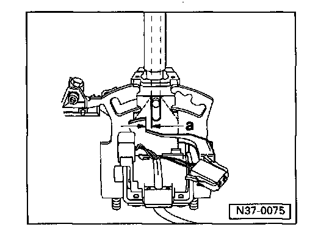
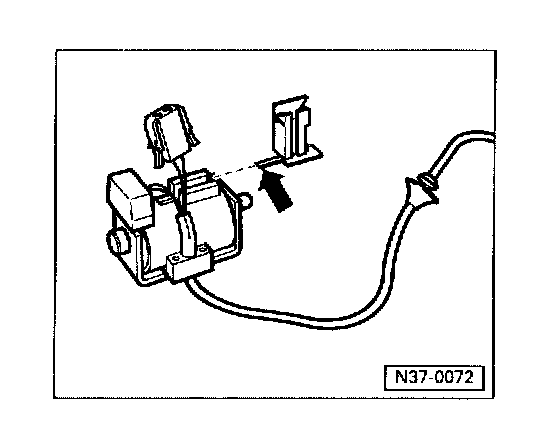

Selector Lever / Cable Assembly
SELECTOR LEVER
Disassembling and Assembling
Note:
Selector lever must be removed to replace individual parts.
1 - Selector lever
- Assembling - Fig. 1
2 - Indicator lighting
- Mounting indicator lighting connector - Fig. 4
3 - Spring
4 - Push rod
- Grease in area of sliding surfaces
5 - Guide sleeve
- Fit after installing push rod
6 - Set screw
- Always replace
- To remove, first remove Shift lock Solenoid and indicator lighting -2-. Clamp set screw in vice and loosen by turning selector lever
- Install with thread-locking fluid AMV 185 101 A1
7 - Shift lock Solenoid -N110-
- Adjusting - Fig. 2
- Functional check - Fig. 3
- Can be checked by On Board Diagnostic (OBD) program
8 - Screw
- Tightening torque: 3 Nm (27 in lb)
- Qty. 2
- Install with thread-locking fluid AMV 185 101 A1
9 - Nut
- Tightening torque: 5 Nm (44 in lb)
- Always replace
10 - Washer
11 - Locking lever
- For ignition lock
- Adjust together with locking cable
12 - Spring
- Hook into hole of detent plate
13 - Retainer
- For locking cable
- Removing and installing locking cable
- Adjusting locking cable
14 - Spring
- For locking pin
15 - Detent plate
- Assemble selector lever before fitting in selector lever housing - Fig. 1
16 - Locking pin
- With bracket
17 - Socket-head screw
- Tightening torque: 6 Nm (53 in lb)
18 - Screw
- Tightening torque: 6 Nm (53 in lb)
19 - Washer
20 - Spring
- Insert in selector lever together with lever -21-
21 - Lever
- For locking in selector lever position "N" or "P"
- Adjusting - Fig. 2
22 - Bushing
23 - Nut
- Tightening torque. 10 Nm (7 ft lb)
- Always replace
24 - Combi-bolt
- Grease shank

Fig. 1 Assembling selector lever before installing
Adjust Shift lock Solenoid -N110- (Fig. 2) and carry out functional check (Fig. 3) before installing selector lever in selector lever housing.
- Install set screw and Shift lock Solenoid -N110- mounting screws with thread-locking fluid AMV 185 101 A1.

Fig. 2 Adjusting Shift lock Solenoid -N110-
- Adjust solenoid by sliding in elongated holes until correct clearance -a- exists between push rod and lever - Fig. 3.

Fig. 3 Adjusting clearance between push rod and lever
Dimension -a = 0.3 mm (0.019 in.)
Functional check
- Shift selector lever into position "P" and supply Shift lock Solenoid -N110- with 12 Volts
- It must not be possible to shift selector lever into , driving gear.
- Interrupt solenoid operation.
- It must now be possible to shift into driving gears.
- Push rod must not catch on lever.
- Shift selector lever into "N" and check as in "P".
- After adjusting clearance, install assembled selector lever.

Fig. 4 Mounting indicator lighting connector
(Shift lock Solenoid with single wiring harness)
- Push bracket with lug (arrow) on until lug engages.
- Seat connector cable into bracket and slide connector onto bracket.